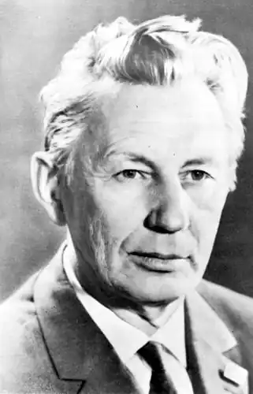
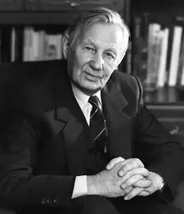
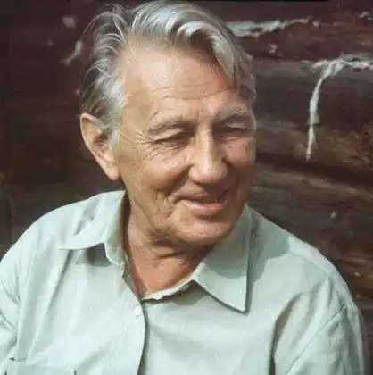

Російський поет, прозаїк. Народився 7 (20) листопада 1916 дер. Клевнево Іванівської губернії в родині селян, зимами працювали на текстильній фабриці. Рано залишився сиротою; навчався в Іванівській текстильній фабриці-школі, після закінчення якої в 1934 працював в молодіжній газеті, де зблизився, зокрема, з майбутнім відомим поетом "іфлійцем", загиблого на війні, Н.Майоровим. У 1939-1945 — в армії, кореспондент фронтових газет. Ліричну тональність першої книги віршів Злива (1940), насиченою інтимними переживаннями, картинами природи і т.п., з початком війни змінює схвильовано-напружений романтизм юності, яка викинулася в горнило боїв (збірники "Фляга", "Військова Нева", обидва 1943; "Дорога гвардії", "Багаття на перехресті", обидва 1944; "Переправа", 1945; поеми "Волга", 1942; "Квітів — цвісти!", 1944).
Як і у більшості поетів подібною долі (С.Орлова, С.Наровчатова, М.Луконіна, А.Межірова, К.Ваншенкіна, Ю. Друніної і ін.), Відгомони фронтовий юності виразні і в подальшій творчості Дудіна, зверненому як до військових і актуально-політичним сюжетів (збірники "Вважайте мене комуністом", 1950; "Джерело", 1952; "Сосни і вітер", 1957; "Мости. Вірші з Європи", 1958; "Вперте простір", 1960, поеми "Вчора була війна ", 1946, опубл. в 1963;" Пісня Воронячої горе "," Пісня моїм комісарам ", обидві 1964;" Пісня далекої дороги ", 1966;" Чверть століття потому ", 1968), так і до мирних темами — лю БВІ, дружби, поетичного покликання, сімейного вогнища, жіночої краси і вічної цілющої сили природи (збірки "Сім'я", 1949; "Чи залишиться любов", 1962; "Дерево для Лелеки", 1980; "Ключ", 1983; "Книга лірики" , 1986; поема "Четверта зона", 1959, і ін.).
Улюблені жанри Дудіна — пісні і послання, які передбачають щирість саморозкриття, інтимність інтонації і в той же час якусь епічну "Освітлення", піднесеність, відчуття постійного биття пульсу історії. Багато віршів присвячені друзям-поетам: К.Куліеву, Д.Кугультінову, Л.Мкртчян, С.Капутікян, а також С.С.Гейченко, колишньому охоронцеві національної святині — заповідника Пушкінські гори, давнього друга-поета В.С.Жукову. Дудін багато перекладав — з вірменського (А.Ісаакян, Е.Чаренц і ін.), Грузинського (Н.Бараташвілі), українського (М.Бажан, І.Драч), башкирського (М.Карім), шведського (Е.Сёдергран) мов (книга вибраних перекладів — Все разом, 1980). Гонорар за книгу віршів, перекладів і есе Земля обітована, видану в 1989 в Єревані, поет передав жертвам землетрусу у Вірменії в грудні 1988. Вірші з щоденника Гамлета (1984), цикл віршів Сьогодні (1986) про трагедію, викликаної аварією атомного реактора в Чорнобилі , цикл Закінчується двадцяте століття ... (1989) оголюють гіркоту розчарувань поета в світлих сподіваннях юності, біль від втрати яких не послабила, однак, рішучого незгоди Дудіна, лауреата Державної премії СРСР (1981), удостоєного і інших почестей і нагород, переконаного государст енніка, Героя Соціалістичної Праці (1976), з руйнівними, на його переконання, процесами "перебудови" (цикли На повороті в завтра, У вечірнього вогню, обидва 1988; Пісні втікає воді, Десять листівок з берега біди, обидва 1991; Після півночі, 1992; Одинокий дуб, 1993; вірш Моя молитва на Новий 1992 рік). Остання невидана книга Дорогий крові по дорозі до Бога, продовжуючи одну з лейтмотівних в творчості Дудіна тим синівської подяки домашнього вогнища, свою "малу батьківщину" і покійної матері (згідно із заповітом поета, похований поруч з нею в с.Вязовское Іванівській обл.), Підводить підсумок заключного періоду сумнівів і гніву: "Я жити без віри не вмію / і бути непотрібним не хочу". Несподівану грань творчості Дудіна розкриває складений ним збірник Грішні рими (1992), де сучасний фольклор — частівки, двовірш, прислів'я — висміюють пороки суспільства. Автор заснованої на особистих спогадах і реальних фактах повісті Де наша не пропадала (1967) і збірника нарисів Поле тяжіння. Проза про поезію (1981). Помер Дудін в Петербурзі 31 грудня 1993.